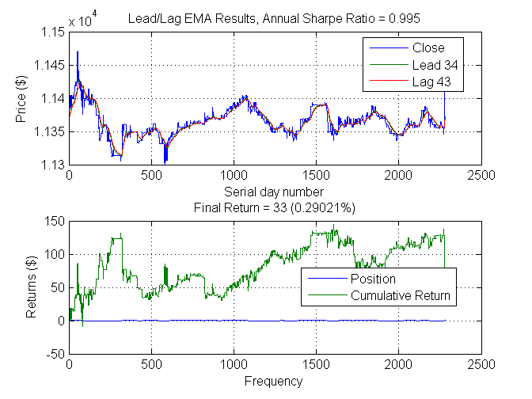

Algorithmic Trading with MATLAB: Intraday trading
This demo develops and tests a simple exponential moving average trading strategy. It encorporates obtaining data from the Bloomberg BLP datafeed and executing trades in EMSX, based on the strategy. % %% Pre-trading tasks % Add blpapi3.jar to java path javaaddpath('C:\blp\API\blpapi3.jar')
Contents
Fetch equity data from Bloomberg BLP datafeed
This time get intraday data instead of daily data
equity = 'SBK'; % Ticker symbol for equity around which we will develop the strategy. This can be changed. startTime = today - 3 ; % 3 days ago (Friday) endTime = floor(now); annualScaling = sqrt(250*7*60); c = blp; % Connect to Bloomberg V3 Communications Server Ticker = strcat(equity,' Equity'); % rather than daily data, get raw tick data: intradayData = timeseries(c,Ticker,{startTime,endTime}); % gives back trade, time stamp, price, quantity intradayDates = cell2mat(intradayData(:,2)); intradayPrices = cell2mat(intradayData(:,3));
Open a parallel computing environment
We will be performing many more backtests on a larger data set than before, so we would like to take advantage of as many processors as we can in order to speed up the computation. MATLAB's Parallel Computing Toolbox makes this straightforward. First, we open a pool of parallel workers:
% Use all the cores on my laptop if matlabpool('size') == 0 matlabpool local end % Then we use MATLAB's |parfor| construct to parallelize our |for|-loops:
Perform the parameter sweep
We will sweep not just across many combinations of leading and lagging averages, but we will furthermore sweep across many different granularities of data in an effort to find the 'best' frequency to use. The variable 'ts' below is the sampling time and varies from 1 tick up to 2 ticks (i.e.: about 1 hour). We could sweep through in minutes, but for convenience we will use ticks.
seq = generateSpacedInts(1, 200, 25);
range = {seq,seq};
llfun =@(x) leadlagFun(x,intradayPrices,annualScaling);
tic
[~,param,sh,xyz] = parameterSweep(llfun,range);
toc
leadlag(intradayPrices,param(1),param(2),...
annualScaling)
xlabel('Frequency')
Elapsed time is 0.153043 seconds.

The ideal values are a leading indicator of 34 and a lagging indicator of 43 ticks